| 日付 | 2010年5月15日（土） |
|---|---|
| 山域 | 奥秩父 |
| メンバー | 単独 |
| 山行形態 | 日帰り |
| アクセス | 電車、バス |
| ルート (Map) | 八幡→赤岩峠→赤岩岳→八丁峠→両神山→日向大谷 |
両神山の北に連なる八丁尾根は岩尾根として有名だ。
そこからさらに伸びる尾根は赤岩尾根と呼ばれる、好事家向きの藪岩稜ルートだ。
前々から気になっていたルートだったが、難ルートということで敬遠してきた。
しかし、昨秋、大ナゲシに登った時にこの尾根を眺めて、
暖かくなったらこのルートに挑戦してみようという気になった。
春を迎えた快晴の週末、軽量の荷物で赤岩尾根に向かう。
8:32 八幡バス停到着。標高480m。
大ナゲシに登ったときと同様八幡バス停にやってくる。
車があれば埼玉側から入るほうが圧倒的に楽なのだが、交通の便が悪いので仕方が無い。
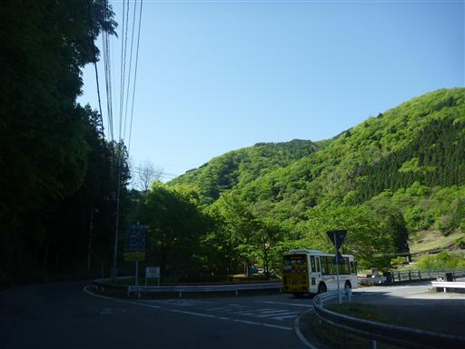
昨秋と同じ場所から写真をとる。時期が違えば風景も大きく変わる。
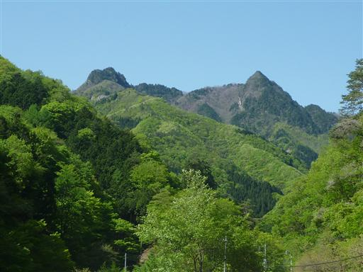
道端に咲くショカツサイ。
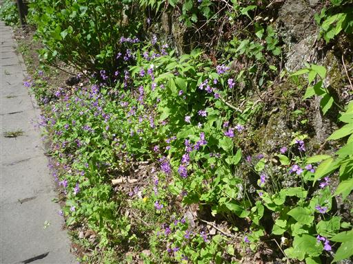
車道終点付近の山奥にも小さな集落が広がっている。
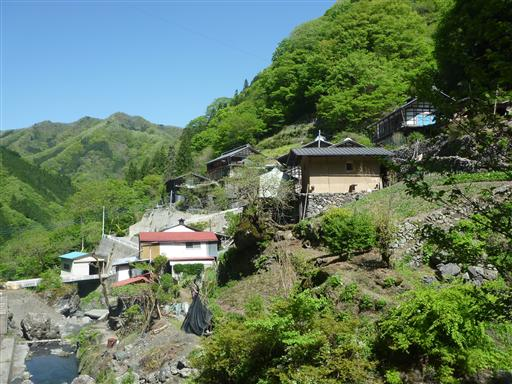
沢沿いの登山道に入っていく。沢を何度も渡りながら登っていく楽しいルートだ。
新緑が目に眩しい。
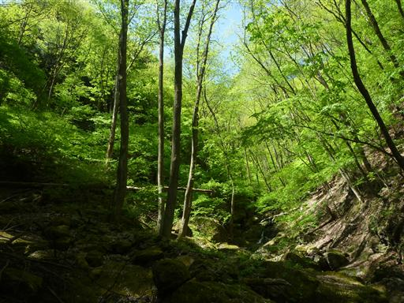
モミジのような葉が地面から出ている。
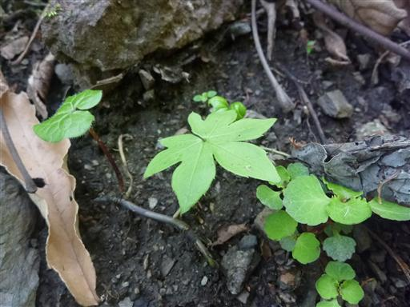
巨大な岩壁の基部を登っていく。
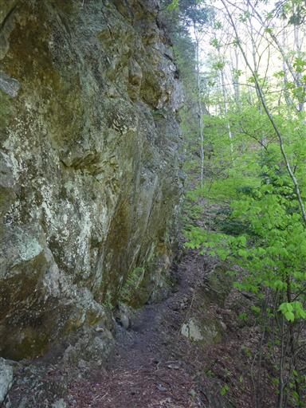
シダ植物がぽつぽつと生えている。寒いからか先っぽは丸まったままだ。
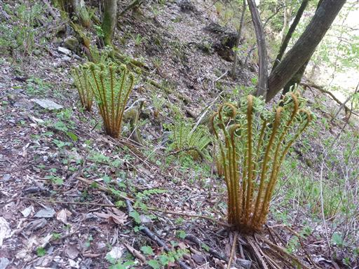
標高が高くなると、緑色もだんだんと淡い色になってくる。
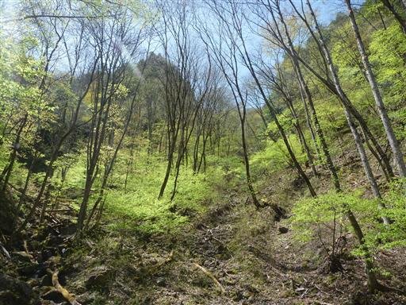
赤岩峠に到着。前回はここから大ナゲシを往復した。
今回はここから赤岩尾根をめざす。
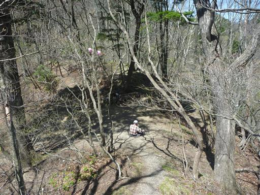
アカヤシオの花が咲いている。この辺りの山々はアカヤシオで有名だ。
何度見ても美しい花だ。
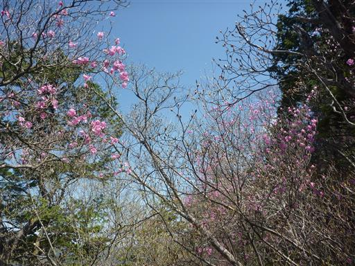
尾根を登っていくと、赤岩岳の岩壁に突き当たる。
登れないことは無いがどう見てもルートではないので左に迂回する。
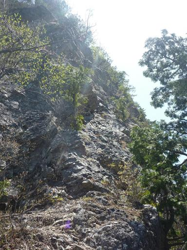
狭くて歩きにくい踏跡を進む。テープはあるものの、途中で踏跡は途切れてしまう。
やむを得ず引き返すことにする。
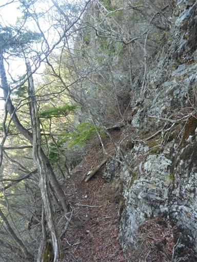
岩壁にひっそりと咲くヒカゲツツジ。アカヤシオやミツバツツジに比べると珍しい種類のツツジだ。
道を間違えたおかげでいいものが見れた。
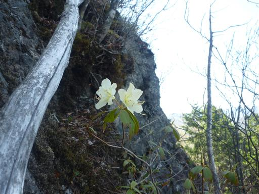
道を間違えた地点まで戻って、正しいルートに復帰する。
さすが正規ルートは歩きやすい。
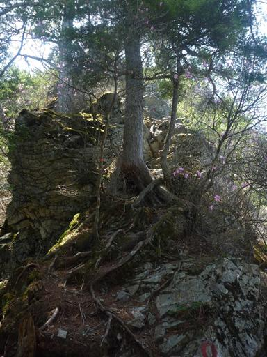
背後に大ナゲシの岩峰が目立っている。
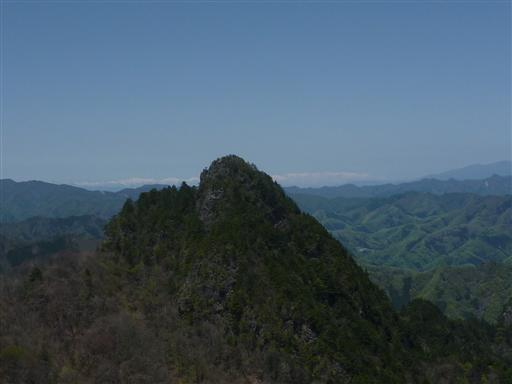
遠くの方には八ヶ岳連峰が望める。もう雪の量はだいぶ少なそうだ。
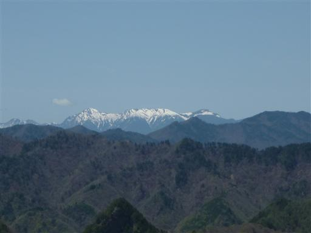
11:06 赤岩岳山頂到着。
途中で道を間違えたわりには好タイムだ。今回は難ルートを歩くため、ここまでは速足で歩く。
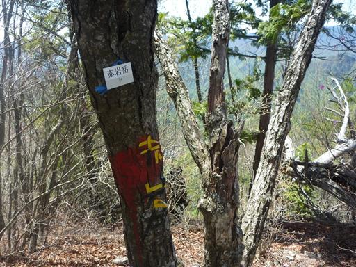
大ナゲシからは見事な岩峰に見えたこの山も、登ってみれば樹木に囲まれた小ピークだ。
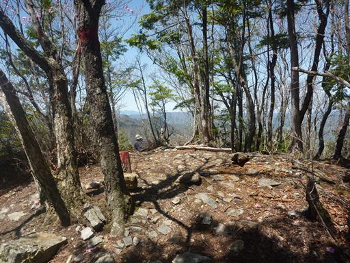
眼下にはニッチツ鉱山の集落跡が見える。
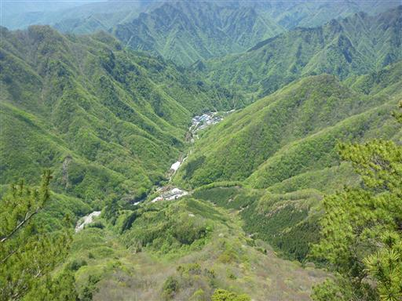
ここから先は藪岩稜の難ルート。岩だらけのルートを想像していたが、
案外踏み跡はしっかりしていて、危険箇所も少ない。
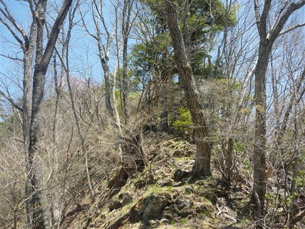
1583m峰前衛峰の岩場。ロープが上から垂れ下がっている。
岩場に点在するアカヤシオがきれいだ。
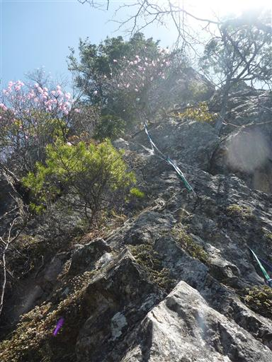
岩場の上部に出ると絶景が広がる。
緑色の西上州の山々、その向うに真白な上越国境の山々が見える。
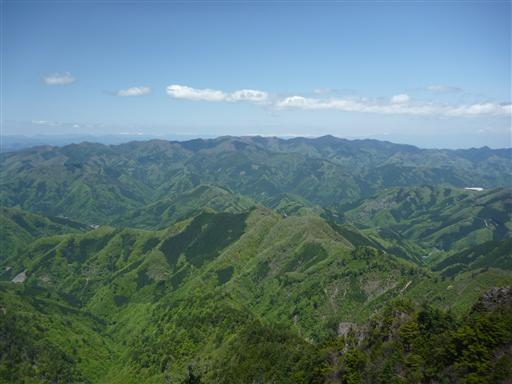
遠くの方に見えるのはなんと北アルプスだ。
春に埼玉の山から北アルプスが望めるとは思わなかった。
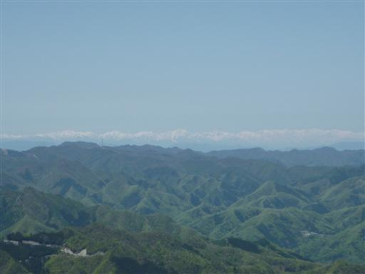
これから進む赤岩尾根の先には両神山が近い。
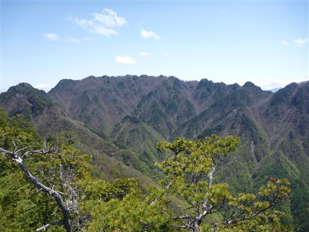
前衛峰の後は1583m峰だ。ここの岩場が一番の難所。
貧弱なロープはあるが、鎖などの整備はされていない。

1583m峰の先も多くのピークを連ねながら尾根が続いている。
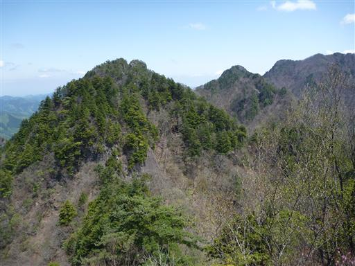
桜の花が咲いている。アカヤシオも良いが桜もきれいだ。
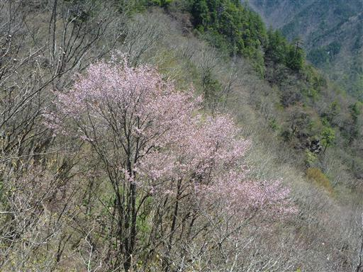
目の前にP1が現れる。このP1を超えるともう難所は無い。
展望の良いピークとの事なので、そこまで行ってゆっくりすることにする。
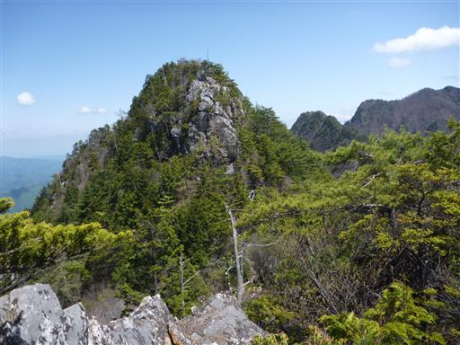
13:25 八丁峠に辿り付く。赤岩尾根の終点だ。
P1は……登った記憶が無いので、ピークに登らず巻道を行ってしまったのかも。
明瞭な登山道を忠実に辿っていたはずだったのだが…。残念。
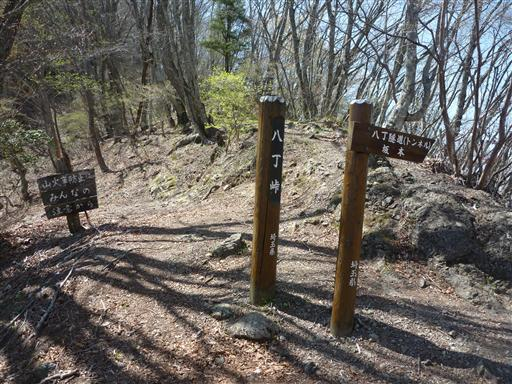
今まで歩いてきた方角には「立入禁止」の標識が立っている。
この標識があると、こちら側からの縦走はちょっとはばかられる。
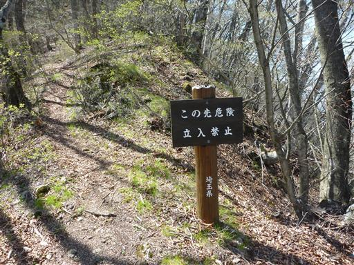
八丁峠にある展望台。二子山が良く見える展望台との記憶があったが、
樹林に囲まれていて何も見えない。
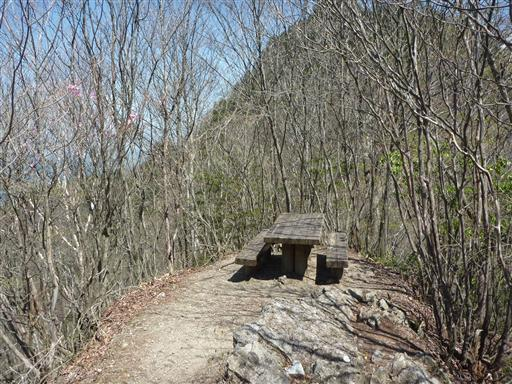
ここまで相当速足で歩いてきたので疲労は大きいが、せっかくなので両神山まで行くことにする。
八丁尾根を歩くのはこれで4度目なので慣れたものだ。
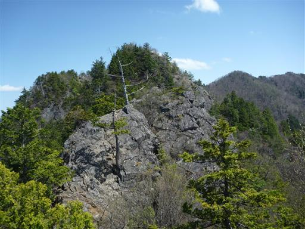
アカヤシオが咲くこの時期は両神山の最も混雑する時期。
比較的難ルートと言われる八丁尾根も多くの登山者が歩いている。
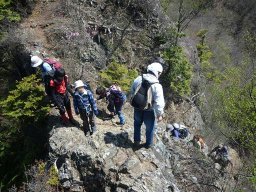
振り返ると今まで歩いてきた赤岩尾根のギザギザの稜線が見渡せる。
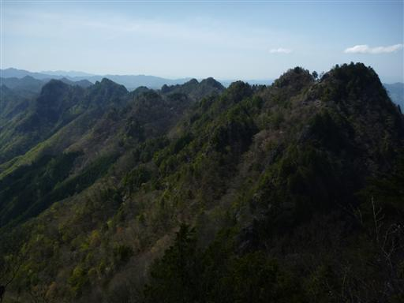
14:35 両神山山頂到着。標高1723m。
3度目の両神山山頂は相変わらずの大混雑だ。
八丁尾根からはたった1時間10分だった。
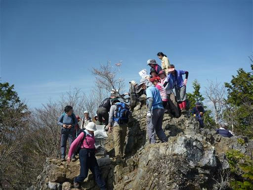
山頂からの展望。午後になってさすがに霞んできたが、それでも素晴らしい展望だ。
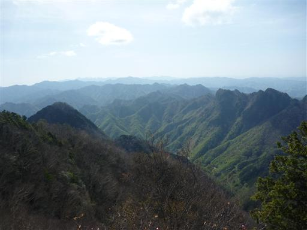
南の方には富士山の頭がかすかに見えている。
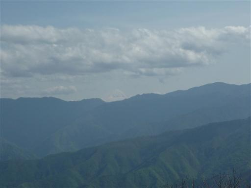
梵天尾根を下ると言うルートも考えていたが
疲れたのでメジャールートの日向大谷に通じる道を下る。
登山道にはなぜか所々にロープが張られている。
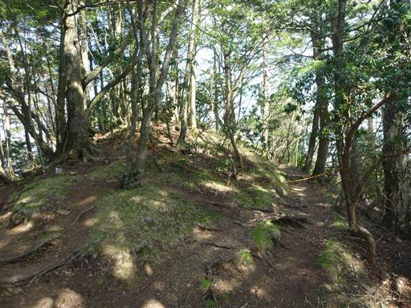
山腹に建つ御嶽神社。山中にあるものにしてはずいぶん立派だ。
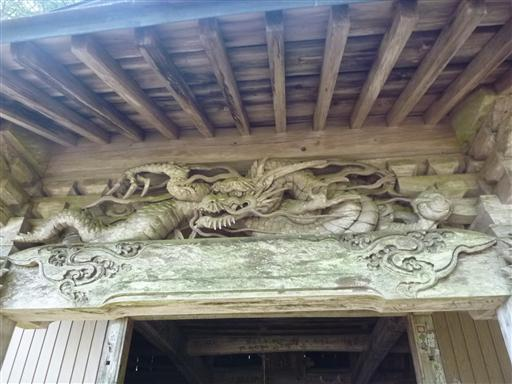
神社の前には一対のオオカミの狛犬が置かれている。
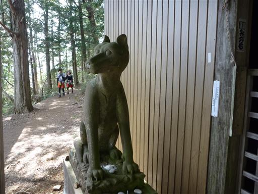
所々に鎖場が現れる。一番多くの登山者を集めるこのルートにも鎖場があるのは意外だ。
この道を通ったのはもう3年前で、記憶はあいまいだ。
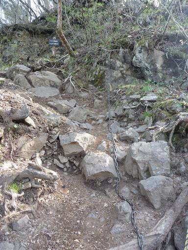
清滝小屋に到着。小屋前は大勢のハイカーで賑わっている。
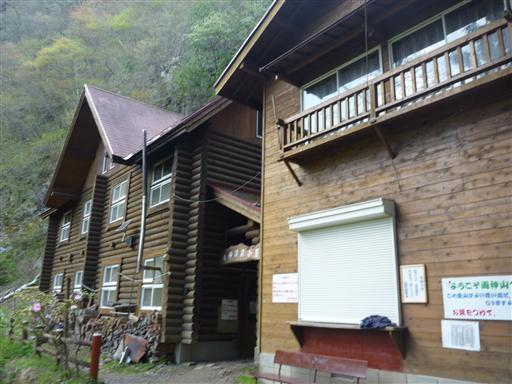
小屋前に咲くシャクナゲの花。ほとんどが蕾だが1輪だけ咲いている。
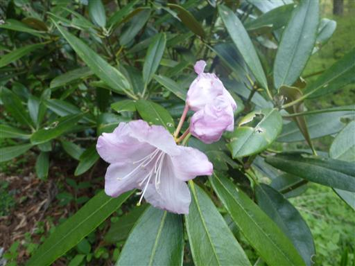
小屋付近はニリンソウの群落地だ。仲良さそうに2輪の花が並んで咲いている。
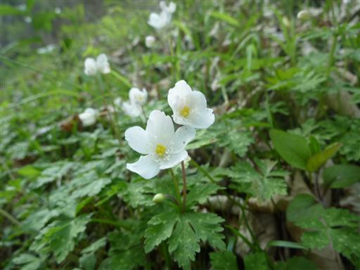
ありがたいことに水場に到着。今日はそこそこ気温が高く、しかもロングコース。
1.2L程度のお茶しか持って来なかったので、既に水筒は空だった。
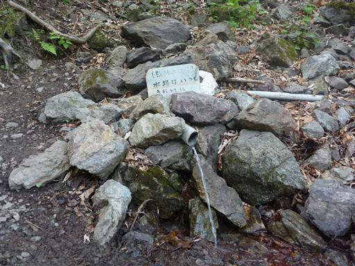
沢沿いの道になると足元に様々な花を見かける。
こちらの花はムラサキケマン。
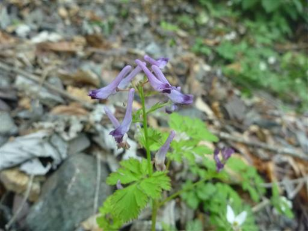
クワガタソウ。小さくて目立たない花だ。
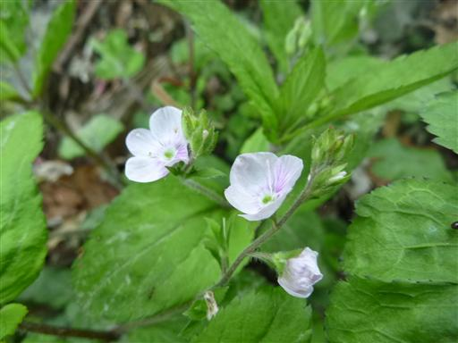
ラショウモンカズラ。花に毛がたくさん生えている。
複雑な形、派手な色でよく目立つ花だ。
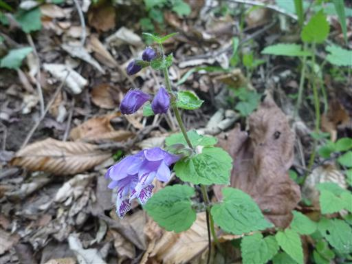
ヒメウツギ。白い花を咲かせる落葉低木だ。
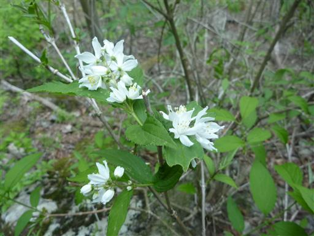
登山道は次第にひっそりとしてくる。上の方に人が大勢いたのが嘘のようだ。
道を間違えたのではないかと少し不安になる。
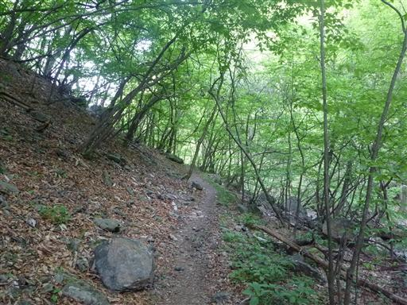
16:32 道なりに進んでいって無事、日向大谷バス停到着。標高650m。
赤岩尾根を忠実にたどることができず、少々不完全燃焼の山行になってしまった。
岩尾根にしては難所は少なく、展望もほとんどない尾根だった。